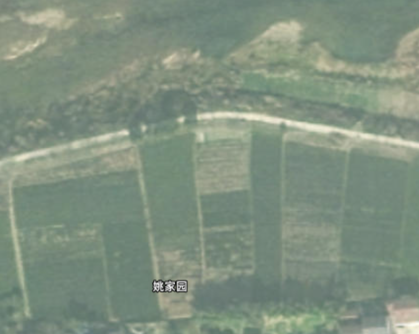
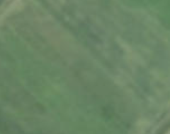

农机监管平台 北斗终端
在册 24 台 · 今日作业 18 台 · 86 亩 · 北斗在线 23/24
在册农机
24台
拖拉机12/植保机8
今日作业
18台
↑ 出勤75%
作业面积
86亩
本周420亩
北斗在线
23/24
1台离线
农机类型
拖拉机12 台
植保无人机8 台
采收机4 台
今日作业
植保·5#棚无人机·65%
翻地·A区拖拉机·完成
运输·采收3台·进行
维保
待保养3 台
已年检22 台
保险到期1台·7天内

展示方式
轨迹
农机列表5 台在线
NJ-01 旋耕机
5.2km/h · 旋耕 · 张师傅
WR-03 植保无人机
悬停 · 电量82% · 李飞手
WD-02 除草机
3.8km/h · 除草 · 王师傅
NJ-04 旋耕机
最后在线 2 小时前
TC-05 运输车
驻车 · 园区门口 · 陈师傅
旋
NJ-01
植
WR-03
除
WD-02
停
NJ-04
运
TC-05
作业中空闲离线
农机作业统计2026 年度
作业面积 / 达标率 / 重叠率 / 状态分布 · 支持按农机类别、作业类型、时间筛选。
年度作业面积
1,860亩
达标率 96.2%
达标面积
1,789亩
占比 96.2%
重叠面积
52亩
重叠率 2.8%
作业总时长
386小时
里程 2,140 km
各类农机作业面积对比
作业状态分布
达标 72.5%部分重叠 18.1%未达标 9.4%
历史轨迹
轨迹回放 · NJ-01 旋耕机
达标 98% · 12.5 亩 · 6.2km
进度 0% · 已行驶 0.0km · 用时 0:00
农机档案
在册农机
24台
旋耕6/拖拉机8/无人机6/采收4
正常运转
20台
出勤率 83%
待保养
3台
7天内
保险到期
1台
NJ-04 · 5天内
| 编号 | 类型 | 型号 | 购入日期 | 北斗终端 | 状态 | 保险到期 | 操作人 | 最近维保 | 操作 |
|---|---|---|---|---|---|---|---|---|---|
| NJ-01 | 旋耕机 | 东方红-904 | 2024-03-15 | 在线 | 运转 | 2027-03 | 张师傅 | 2026-06-20 | 详情 |
| NJ-02 | 拖拉机 | 雷沃-1254 | 2023-09-10 | 在线 | 运转 | 2027-09 | 李师傅 | 2026-05-18 | 详情 |
| WR-03 | 植保无人机 | 大疆 T50 | 2024-06-20 | 在线 | 空闲 | 2027-06 | 李飞手 | 2026-07-01 | 详情 |
| WD-02 | 除草机 | 久保田 1GZ | 2023-11-05 | 在线 | 运转 | 2026-11 | 王师傅 | 2026-06-15 | 详情 |
| NJ-04 | 旋耕机 | 东方红-904 | 2022-04-20 | 离线 | 待保养 | 2026-07-23 | — | 2026-01-10 | 详情 |
| TC-05 | 运输车 | 五菱荣光 | 2024-01-08 | 在线 | 空闲 | 2027-01 | 陈师傅 | 2026-06-28 | 详情 |
| WR-06 | 植保无人机 | 极飞 P100 | 2024-08-15 | 在线 | 运转 | 2027-08 | 赵飞手 | 2026-07-05 | 详情 |
| HV-07 | 采收机 | 沃得 4LZ | 2023-05-12 | 在线 | 待保养 | 2027-05 | 孙师傅 | 2026-04-20 | 详情 |